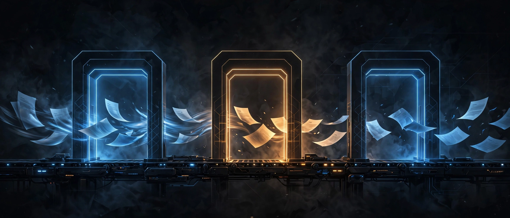
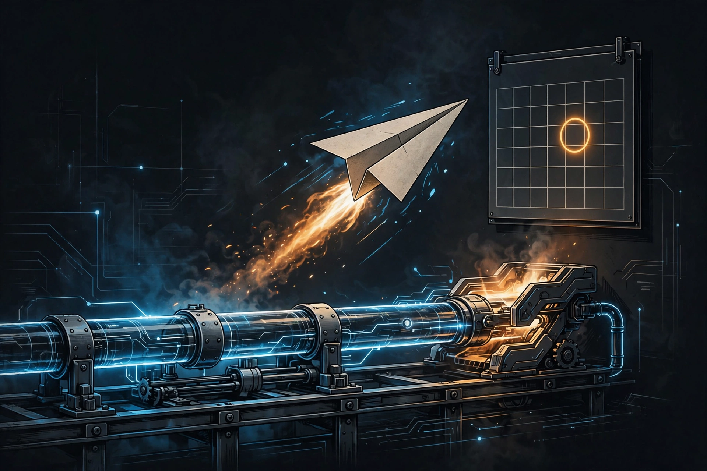

Content Needs Release Gates, Not Inspiration

Everyone gives the same advice about content: "Just post consistently. Let inspiration strike."
That's terrible advice. It's the equivalent of telling a software team to "just write code consistently" — no tests, no review, no staging. Just push to production whenever you feel inspired and hope the users like it.
No serious engineer ships that way. So why do we publish that way?
I run my content like software releases. Four gates stand between an idea and the public. Nothing ships without passing all four.
Gate 1: The Stockpile.
Before Day 1, I stockpile 12 finished posts. Twelve. Not drafts — finished, publish-ready pieces sitting in a queue.
Why? Because publishing from an empty buffer is how you end up posting garbage at 11 PM. When the queue is full, every publishing decision is calm. You're never choosing between "post something bad" and "post nothing." That choice is what kills most accounts I've seen — not lack of talent, lack of buffer.
Software parallel: you don't deploy from a developer's laptop on a Friday night. You deploy from a release candidate. The stockpile is the release candidate — and Gate 2 is what tests it.
Gate 2: Quality Calibration.
One full day is reserved for review — not creating. I read all 12 as a stranger would. Does the hook work? Is the account's voice consistent? Would I stop scrolling for this?
This is the code review of content. The author is always too close to their own work to judge it. So I built a gate that forces distance: create on one day, judge on another, never both.
Most creators skip this gate because it feels like "not real work." It's the most real work. It's the difference between a feed that looks intentional and one that looks accidental.
Gate 3: Day 1.

The publish date is fixed in advance, and publishing is automated. When the day comes, the posts go out whether I feel inspired or not — because the decision was already made at Gate 1 and Gate 2.
This is the deploy pipeline. In software, you don't ask "do I feel like deploying today?" You merge, the pipeline runs, it ships. Content should work the same way. Motivation is a terrible scheduler; automation doesn't need motivation.
Gate 4: The 14-Day Verdict.
Fourteen days after Day 1, I look at the numbers — impressions, real replies, profile visits — and make one of three calls: keep, change, or kill.
- Keep: the format works. Double down.
- Change: something's off — hook, timing, topic. Adjust one variable and re-test.
- Kill: the data says no. Kill it fast, no sentimentality.
This is the part most people never build. They either never look at data (vibes forever) or they look at it daily and panic at every dip (noise forever). Fourteen days is long enough to see signal, short enough to stay agile.
If your account is brand new, pair the 14 days with a minimum sample — never deliver a verdict on noise. My starting default: at least 1,000 impressions or 50 engagements before I treat the verdict as signal.
The verdict is pre-committed: I decide the criteria before Day 1 — for me, something like 500 impressions or 5 real replies in 14 days — so the 14-day review executes a decision instead of hosting a debate with my ego.
---
Why gates instead of inspiration? Because inspiration is a liar. It shows up for the first post and abandons you by the fifth. Systems don't have moods.
And here's the deeper point: gates don't just filter bad content. They generate learning. Every post that passes through four gates teaches you something specific — which gate almost stopped it, what the data said, what to change. Inspiration-based publishing teaches you nothing, because there's no structure to learn from. You can't debug a process that doesn't exist.
Software figured this out decades ago: the pipeline is the product. The release process matters as much as the code. Content is no different. The publishing process matters as much as the post.
So stop waiting to feel inspired. Build the gates. Stockpile before you ship. Review like a stranger. Automate the deploy. And let the 14-day data — not your gut, not your mood — decide what lives and what dies.
One more thing: the numbers in this piece — 12 in the stockpile, 14 days of observation, 10 posts before you start — are my starting defaults, not laws. Tune them once you have your own data.
One caveat: if you haven't published ten things yet, ignore everything above — go publish ten bad posts first. Gates are for people who already ship and want to stop shipping randomly.
Inspiration gets you started. Gates keep you shipping.
← All posts